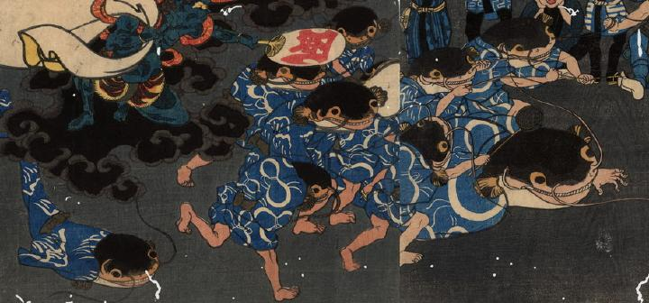

合戦に向かう鯰たち。全員、瓢箪の柄が入った青い着物をまとっており、体は人間のものである。向かって右側奥の鯰2体は手でひげをつかみ、前に向けている。網を片手に持った鯰もいる。
出典：親書誌：U426_nichibunken_0184：大合戦図；ダイカッセンズ／日付：2010／資源識別子：U426_nichibunken_0184_0001_0000
Copyright (c)2010- International Research Center for Japanese Studies, Kyoto, Japan. All rights reserved.